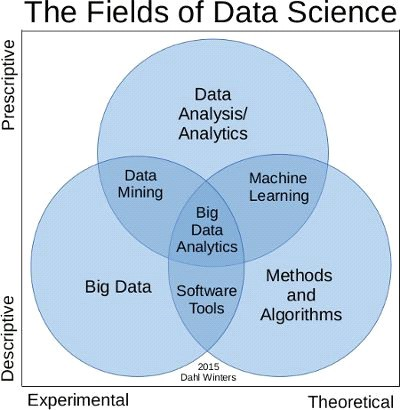
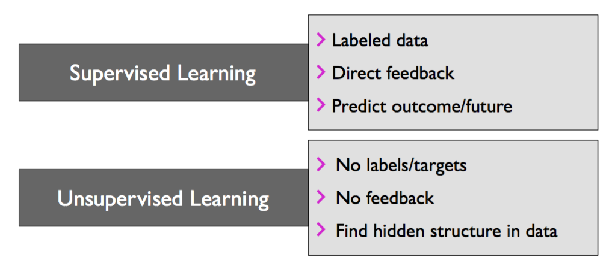
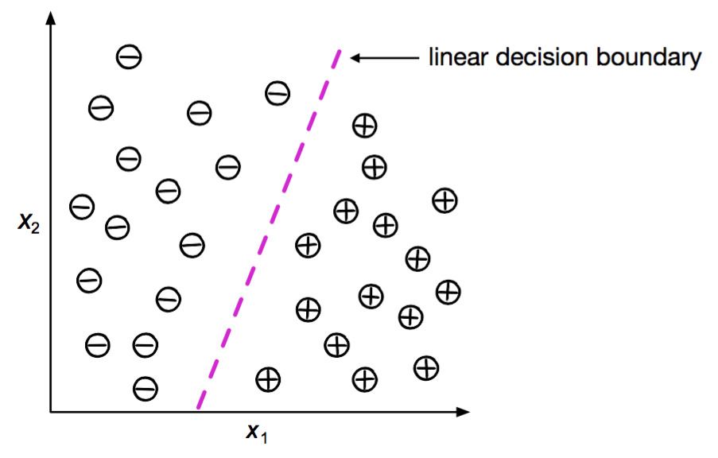
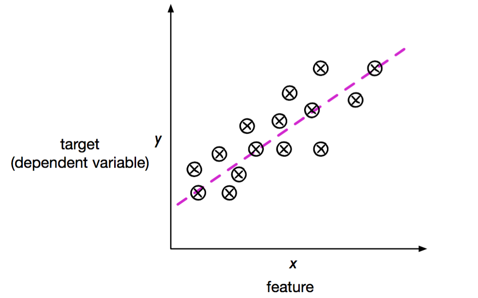
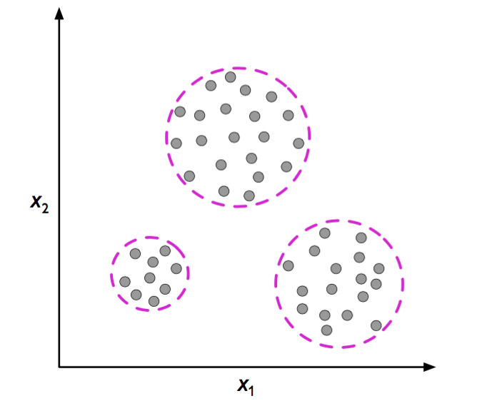

Data Science is about explaining the past and predicting the future by means of data analysis.
It is a multi-disciplinary field which combines statistics, machine learning, artificial intelligence and database technology.
Many businesses have stored large amounts of data over years of operation, and data science is able to extract very valuable knowledge from this data.
The businesses are then able to leverage the extracted knowledge into more clients, more sales, and greater profits. This is also true in the engineering and medical fields.
Statistics – The science of collecting, classifying, summarizing, organizing, analyzing, and interpreting data.
Artificial Intelligence – The study of computer algorithms dealing with the simulation of intelligent behaviors in order to perform those activities that are normally thought to require intelligence.
Machine Learning – The study of computer algorithms to learn in order to improve automatically through experience.
Database – The science and technology of collecting, storing and managing data so users can retrieve, add, update or remove such data.

Big data –> 4 V

Volume: The data is
huge(a 5 TB collection of all emails in your company network)Variety: Your data is
unstructured(e.g. a collection of Twitter statuses: some with images, some with links or simply plain text statuses)Velocity: Your data is
continuouslyflowingValue
Some Applications of Data Science
Email spam detection
Face detection and matching (e.g., iPhone XIIII)
Web search (e.g., DuckDuckGo, Bing, Google)
Sports predictions
Post office (e.g., sorting letters by zip codes)
ATMs (e.g., reading checks)
Credit card fraud Stock predictions
Categories of Data Science

Supervised Learning: Classification
Imagine you own a bakery. But you want to know if the people truly like your bakery or not.
The answer you are looking forward is a simple Yes or No. Do people like your bakery or not?
This type of machine learning is known as classification. Sometimes there are more than 2 categories. For example how much do people like your bakery (Very much, Quite a bit, Not at all).
These are ordinal classifiers. Ordinal classifiers can also be 1, 2 or 3 but remember this is not the same as regression.

Supervised Learning: - Regression
Next, you want more than a classification answer. You want to go straight to the target and find out how much a customer might spend based on their historic data.
You are now looking at a numerical scale measurement for an answer. It can range anywhere from £5 to £15 per visit. Imagine every time you see a new customer walk into your bakery you see the amount they are most likely to spend floating above their head.
This is a regression situation.

Unsupervised Learning: - Clustering
you just want to know if there are groups of customers who are likely to act in a particular way.
Do little kids always go for the cupcakes with cartoon characters. Do young teens with their girlfriend / boyfriend go for heart shaped one? You want the data to frame the question and answer it.
We are looking for patterns, groups or clusters in the data. This is the Clustering problem.
